Sayo, Hyogo: things to do, food and stays
Sayo · Hyogo
Sayo
Highlighted on the Hyogo map.
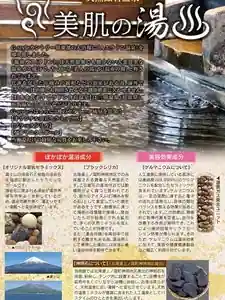
Stay
ホテルＧ－ｓｔｙｌｅジースタイル(旧ダイヤモンド佐用)
Hotel G-style Jisutairu (Kyu Daiyamondo Sayo)
ＮＩＰＰＯＮＩＡ 平福宿場町
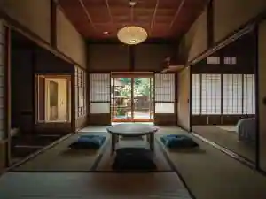
NIPPONIA Hirafuku Shukuba Machi
Inn in Hirafuku, Sayo with a renovated traditional house.
佐用スターリゾート ゴルフ＆スパ
Sayo Star Resort Gorufu & Supa
GLAMINKA sayo集落
GLAMINKA sayo Shuraku
コバコＷｏｒｋ＆Ｃａｍｐ
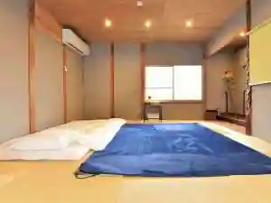
Kobako Work&Camp
Dining
ふじ
Fuji
ホルモン焼きうどん 一力 本店
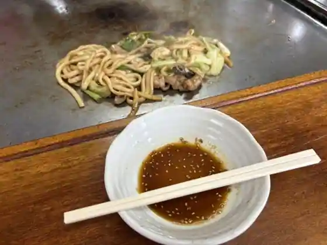
Horumon Yaki Udon Ichiriki Hon
焼肉 新さよ
Yakiniku Atarasa Yo
かずら
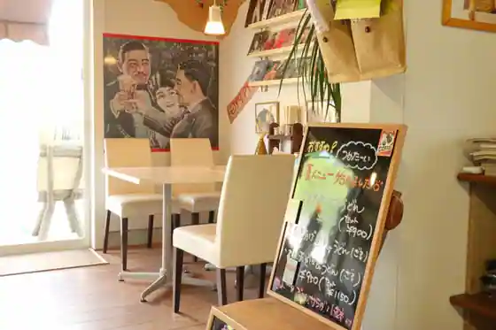
Kazura
そば処 三日月
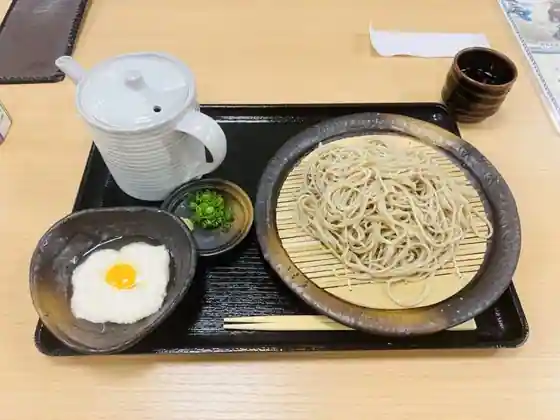
Soba Tokoro Mikazuki
さようの食堂
Sayono Shokudo
蕎麦屋 鬨
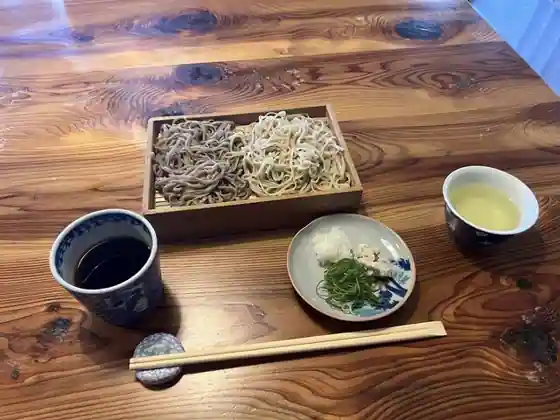
Sobaya Ko
一平
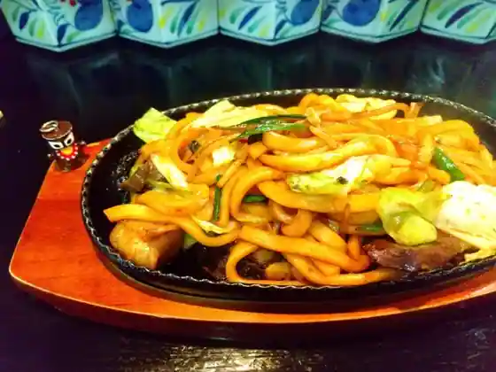
Ippei
味わいの里三日月
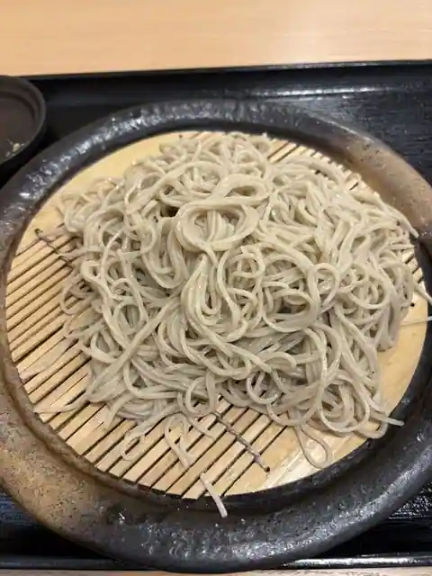
Ajiwa Ino Sato Mikazuki
道の駅宿場町ひらふく
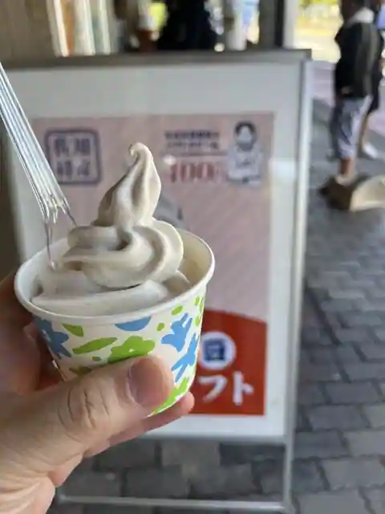
Michi No Eki Shukuba Machi Hirafuku
力作
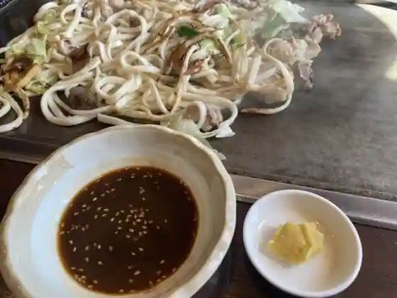
Rikisaku
上月パーキングエリア（上り線） スナックコーナー
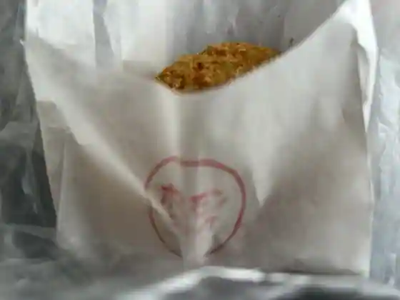
Kozuki Pakingueria (Nobori Sen) Sunakkukona
お多福
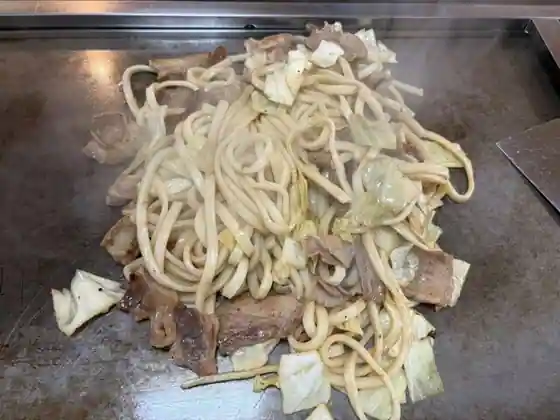
O Tafuku
あいす工房さなえ
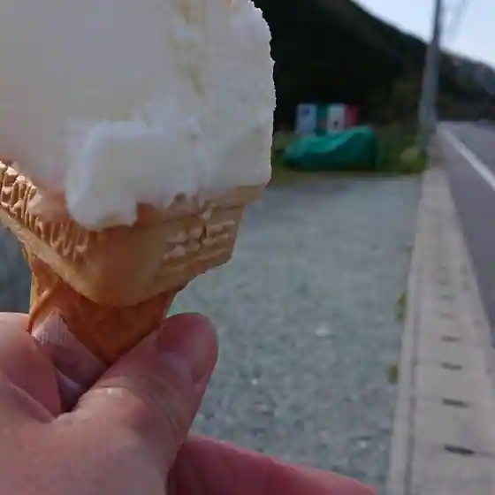
Aisu Kobo Sanae
KUMOTSUKI
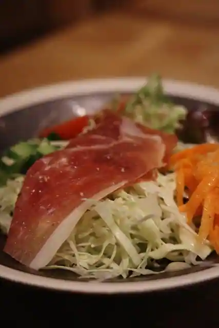
KUMOTSUKI
カフェ アルモ
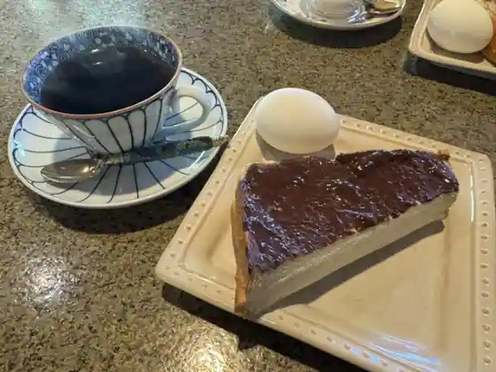
Cafe Arumo
重次郎 平福茶房
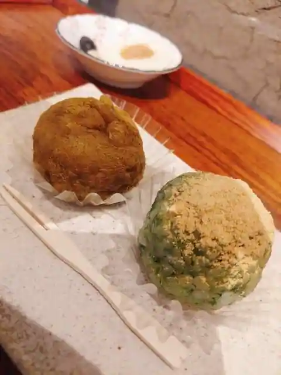
Shigejiro Hirafuku Sabo
上月パーキングエリア（下り線）スナックコーナー
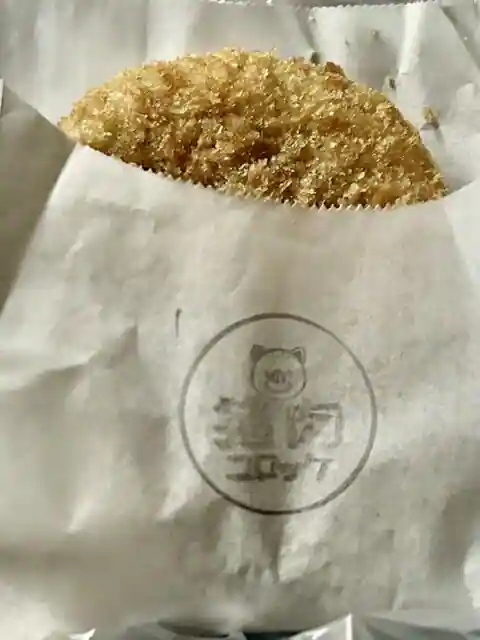
Kozuki Pakingueria (Kudari Sen) Sunakkukona
ジースタイルカントリー倶楽部
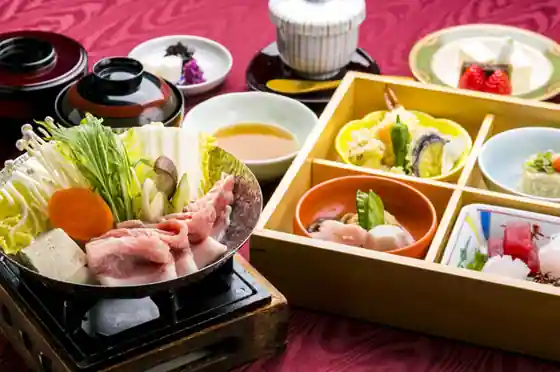
Jisutairukantori Kurabu
ル・プルースト
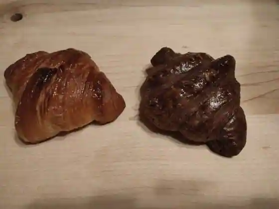
Ru Purusuto
ボルカノ三原牧場店
Borukano Mihara Bokujo
ドライブイン まこと
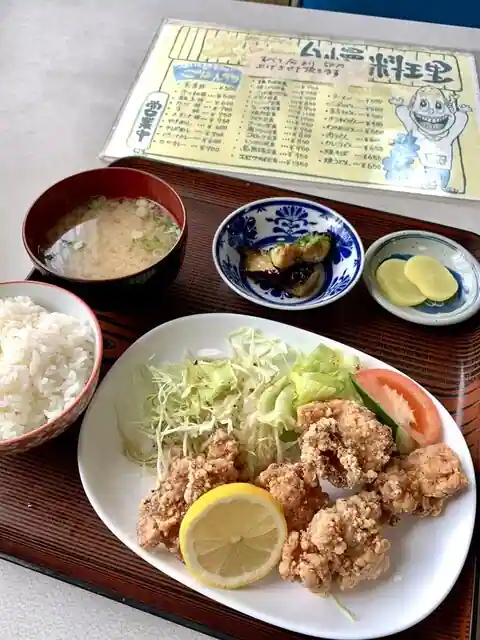
Doraibu Inn Makoto
パン工房＆喫茶 じゅてーる
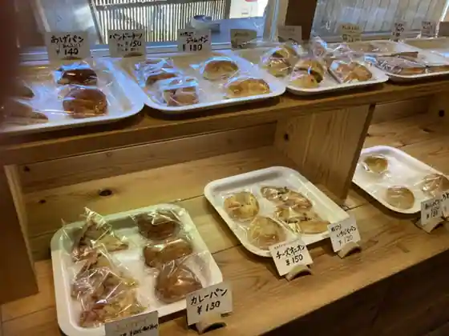
Bakery Kobo & Kissa Juteru
春
Haru